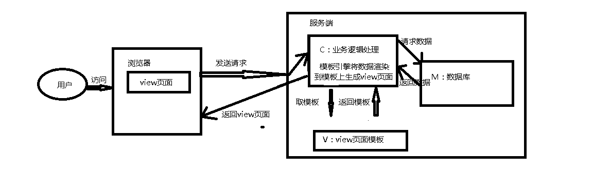
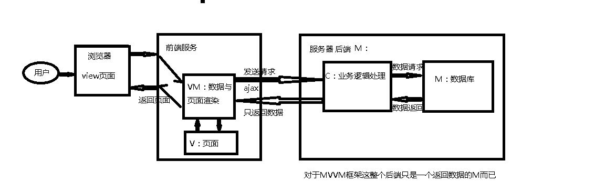

MVC： Controller负责将Model的数据用View显示出来 用户操作> View (负责接受用户的输入操作)>Controller（业务逻辑处理）>Model（数据持久化）>View将结果通过View反馈给用户）

缺点：1.所有业务逻辑都在Controller里操作，逻辑复杂且不利于维护， 2.大量的DOM 操作使页面渲染性能降低，加载速度变慢，影响用户体验。 3.当 Model 频繁发生变化，需要主动更新到View ；当用户的操作导致Model发生变化，同样需要将变化的数据同步到Model中， 这样的工作不仅繁琐，而且很难维护复杂多变的数据状态。
MVVM模式： 核心是提供对View 和 ViewModel 的双向数据绑定，View和Model之间并没有直接的联系，而是通过ViewModel进行交互，View的变动，自动反映在ViewModel上，反之亦然，这样就保证视图和数据的一致性。
M：Movel（数据模型） V：View VM：ViewModel 是一个同步View 和 Model的对象。View 和 Model 之间并没有直接的联系，而是通过ViewModel进行交互。ViewModel 通过双向数据绑定把 View 层和 Model 层连接了起来，而View 和 Model 之间的同步工作完全是自动的，无需人为干涉，因此开发者只需关注业务逻辑，不需要手动操作DOM, 不需要关注数据状态的同步问题，复杂的数据状态维护完全由 MVVM 来统一管理。 VM双向绑定：在 MVVM 框架中，View(视图) 和 Model(数据) 是不可以直接通讯的，在它们之间存在着 ViewModel 这个中间介充当着观察者的角色。当用户操作 View(视图)，ViewModel 感知到变化，然后通知 Model 发生相应改变；反之当 Model(数据) 发生改变，ViewModel 也能感知到变化，使 View 作出相应更新。这个一来一回的过程就是我们所熟知的双向绑定。

或者更直观方式：
AJAX
传统的web应用允许用户填写表单(form)，当提交表单时就向web服务器发送一个请求。服务器接收并处理传来的表单，然後返回一个新的网页(刷新整个页面--因为当时没有一种办法可以做到发送和响应指定的数据)。这个做法浪费了许多带宽，因为在前後两个页面中的大部分HTML代码往往是相同的。由于每次应用的交互都需要向服务器发送请求，应用的响应时间就依赖于服务器的响应时间。这导致了用户界面的响应比本地应用慢得多。
与此不同，AJAX应用可以仅向服务器发送并取回必需的数据，它使用SOAP或其它一些基于XML的web service接口，并在客户端采用JavaScript处理来自服务器的响应。因为在服务器和浏览器之间交换的数据大量减少，结果我们就能看到响应更快的应用。同时很多的处理工作可以在发出请求的客户端机器上完成，所以Web服务器的处理时间也减少了。
使用Ajax的最大优点，就是能在不更新整个页面的前提下维护数据。这使得Web应用程序更为迅捷地回应用户动作，并避免了在网络上发送那些没有改变过的信息。